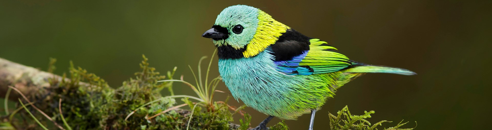
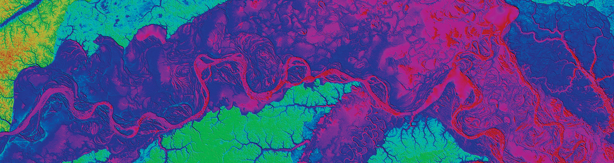

Welcome! I am currently a postdoctoral fellow at the American Museum of Natural History, and since my Ph.D. at the University of São Paulo, I have built an integrative research program that bridges ecology, evolution, and organismal biology by using genomics and a computationally intense framework to explore the processes driving species diversification in the most biodiverse regions on the planet. My research has been focused on multiple aspects of evolutionary biology, especially on the interface between micro and macroevolutionary processes, elucidating fundamental principles that rule the diversity of life on earth and its interaction with the environment, over space and time. My studies aim on understanding patterns of tropical biodiversity, predicting future responses of organisms to climate change, tracking cryptic diversity, and develop new methodological approaches to analyze population genetics and genomic data.
- 
- 